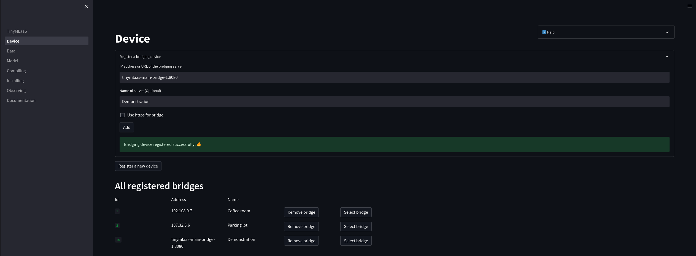
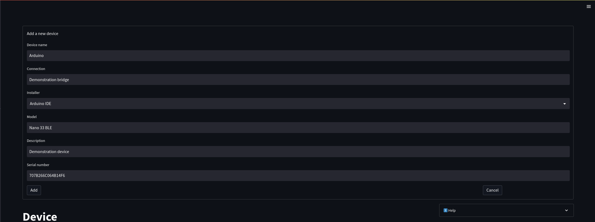
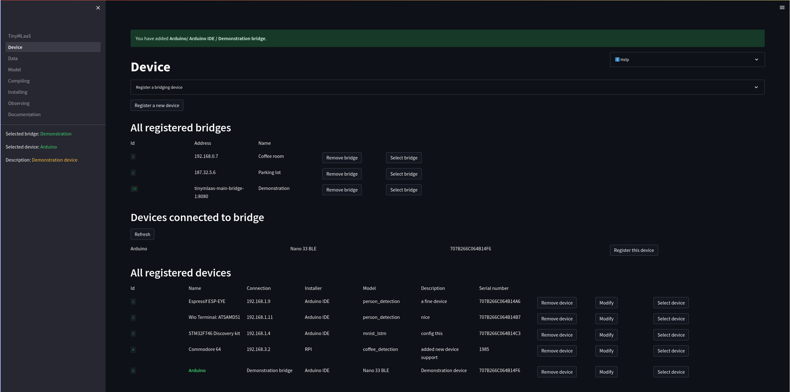
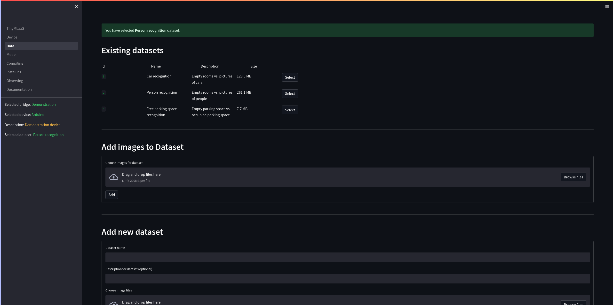
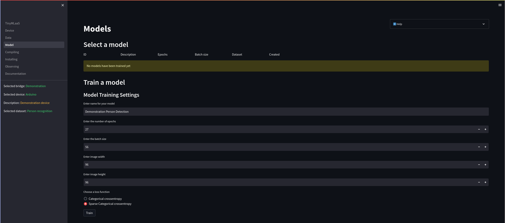
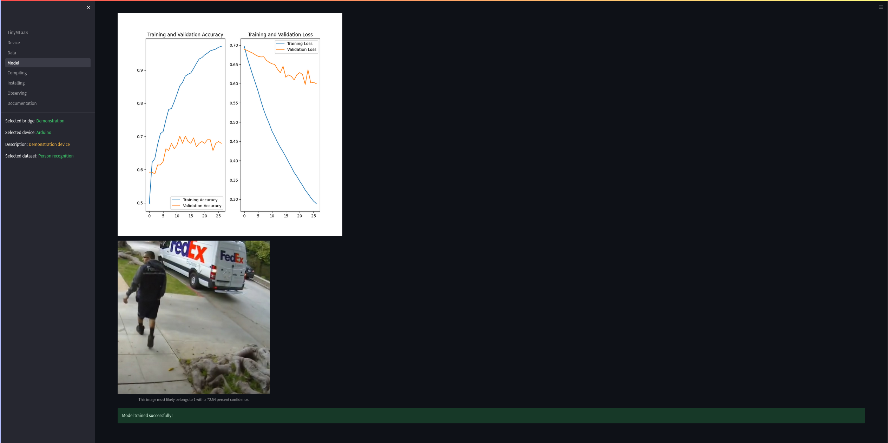
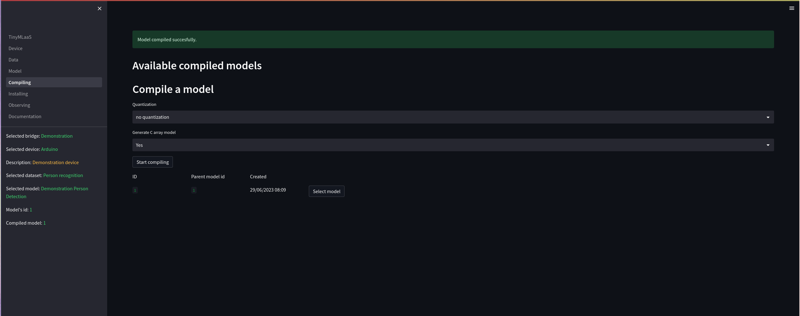
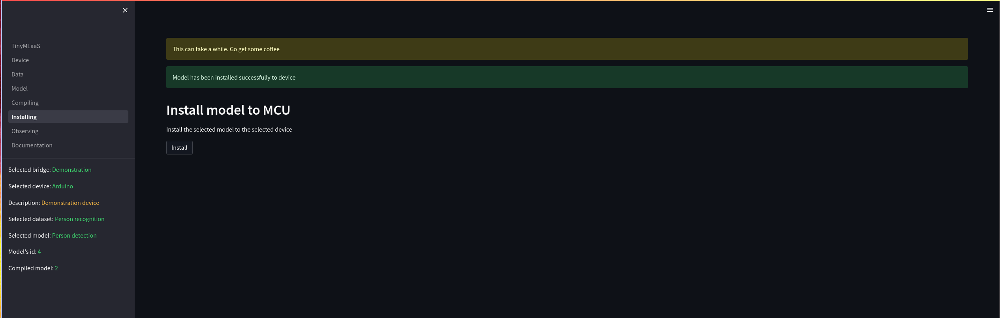

Demonstratation of TinyMLaaS WebApp
This document will demonstrate the steps in TinyMLaaS app. Some pages have dependencies on other pages, so go through pages from top to bottom is recommended at the start.
In order to run TinyMLaaS end-to-end following components need to be run: - The Frontend - The Backend - The Relay
These can all easily be started with the help of docker using the docker-compose-with-bridge.yml file in the Main repository. The application can be started with
docker compose up -f docker-compose-with-brdige.yml -dDevice
In order to install a model to a embedded device, the briging device of the wanted device and the device need to be selected.
The first thing that should be done on the Device page is to either add a new bridge or selecting an existing bridge. Let’s add the bridge that was started by docker compose. To do that, add the name of the bridge docker container with the port 8080 as the bridges address. The bridge will also not use a HTTPS connection in this case.

After adding the bridge, select the wanted bridge by clicking the Select bridge button next to the wanted bridge

Selecting a device to which to install the trained machine learning model later on is required. If the wanted device has not been registered already, register it either manually or by selecting it from the list of devices connected to the bridge. Lets add a device connected to the bridge by pressing the Register this device button next to that device

Add the missing information on the form and click add

The added device will automatically be selected as the active device.

Data
In order to train a model, a dataset with which to train the model needs to be selected.

User can add images from local storage to selected dataset.
If the existing datasets are not enough, a new dataset can be added to the software.
Model
This page shows already trained models as well as allows training of a new model.
Let’s train a new model. For this, we first need to decide the parameters with which to train the model with. This time we chose to train the model with 27 epochs and with a batch size of 56. The image size is 96x96, as this model is trained for an Arduino, which takes pictures of this size.

After the training is done, the software will show an image of the statistics of the training process as well as a test image with a prediction that the newly trained model gave for that picture.

Compiling
The page is responsible for ML compilation. It will turn the selected ML model and turn it into a tflite model as well as generate a C-array of it. The C array is the tflite model turned into bytes stored in a C array, which is required for embedded devices, which do not have a filesystem.
After the compiling is done, the newly compiled model will be selected as the active model.

Installing
Now that a model has been compiled, it can be installed on the device that was selected on the Device page. The page shows a single button, install. When this is pressed, the software will install the selected compiled model to the selected device on the selected bridge.
Be sure that the software has access to the device. If you are not sure, the next command will give all users permissions to read, write and execute to the machine
chmod 777 /path/to/portThis time, the device is connected to /dev/ttyACM0, so it was given permissions.
Now, install the model to the device.

Observing
On the observing page, user can see real-time predictions from device when the start button has been activated.